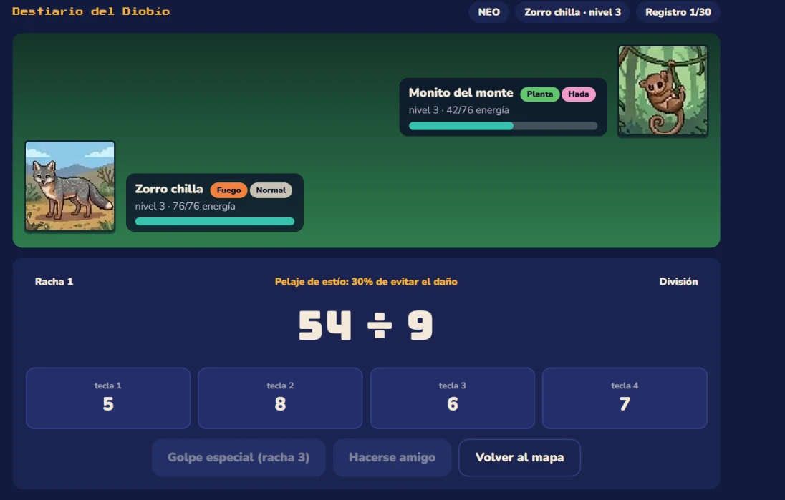
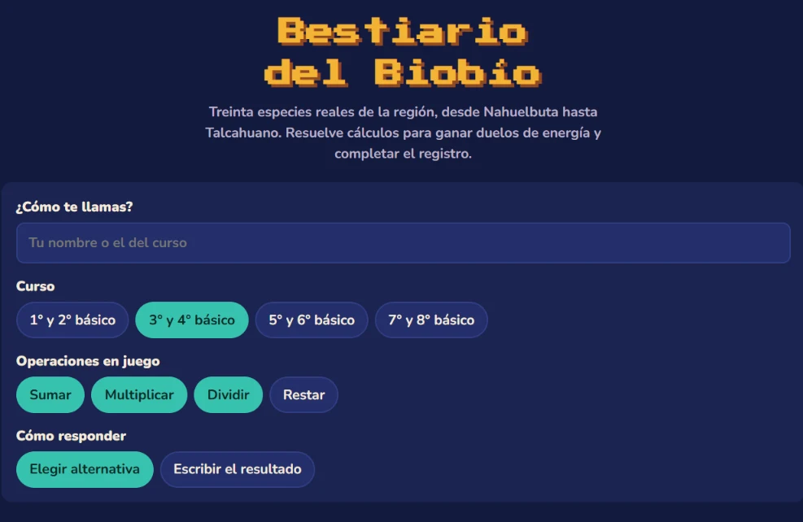
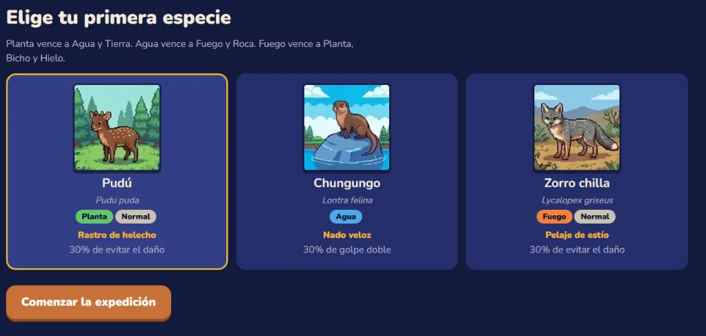

Bestiario del Biobío
Juego educativo de cálculo mental para escolares: treinta especies reales de la Región del Biobío, desde Nahuelbuta hasta Talcahuano. El estudiante resuelve sumas, restas, multiplicaciones y divisiones para ganar duelos de energía y completar el registro de especies.
El nivel de dificultad se ajusta al curso (1° a 8° básico) y el docente elige qué operaciones entran en juego y si se responde eligiendo alternativa o escribiendo el resultado.
- 01Año
- 2026
- 02Cliente
- Proyecto educativo propio
- 03Industria
- Educación · IA


